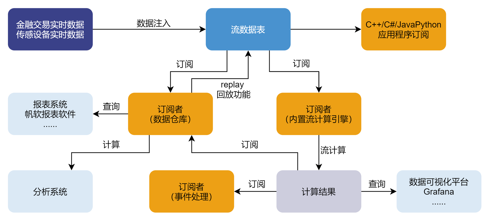
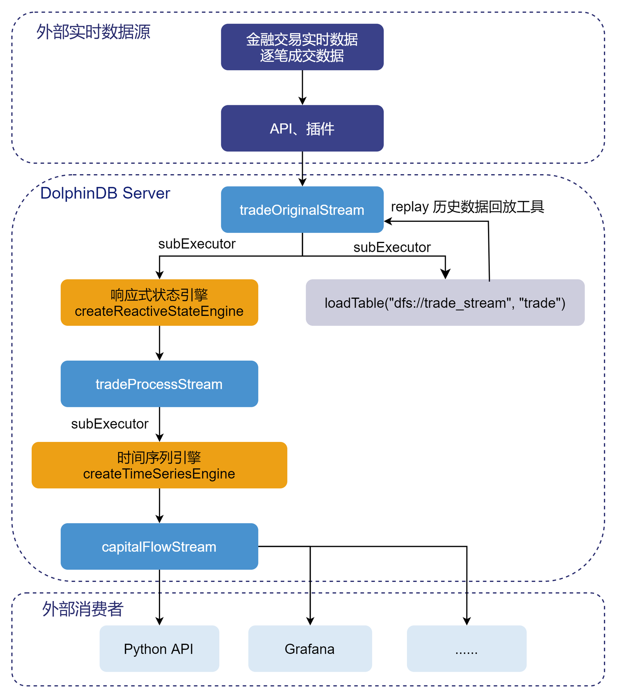
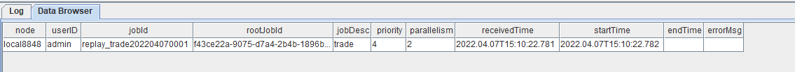

实时计算分钟资金流
DolphinDB 内置的流数据框架支持流数据的发布，订阅，预处理，实时内存计算，复杂指标的滚动窗口计算、滑动窗口计算、累计窗口计算等，是一个运行高效、使用便捷的流数据处理框架。

本教程主要提供一种基于 DolphinDB 流数据处理框架，实时计算分钟资金流的低延时解决方案。
1. 应用场景描述
1.1. 数据源
本教程基于上交所2020年某日的逐笔成交数据进行代码调试，在 DolphinDB 中存储的表结构为：
| name | typeString | comment |
|---|---|---|
| SecurityID | SYMBOL | 股票代码 |
| Market | SYMBOL | 交易所 |
| TradeTime | TIMESTAMP | 交易时间 |
| TradePrice | DOUBLE | 交易价格 |
| TradeQty | INT | 成交量 |
| TradeAmount | DOUBLE | 成交额 |
| BuyNum | INT | 买单订单号 |
| SellNum | INT | 卖单订单号 |
1.2. 计算指标
本教程示例代码计算了1分钟滚动窗口的资金流指标：
| 指标名称 | 含义 |
|---|---|
| BuySmallAmount | 过去1分钟内，买方向小单的成交额，成交股数小于等于50000股 |
| BuyBigAmount | 过去1分钟内，买方向大单的成交额，成交股数大于50000股 |
| SellSmallAmount | 过去1分钟内，卖方向小单的成交额，成交股数小于等于50000股 |
| SellBigAmount | 过去1分钟内，卖方向大单的成交额，成交股数大于50000股 |
关于资金流大小单的划分规则，不同的开发者会有不同的定义方法。以常用的股票行情软件为例：
（1）东方财富
- 超级大单：>50万股或100万元
- 大单：10-50万股或20-100万元
- 中单：2-10万股或4-20万元
- 小单：<2万股或4万元
（2）新浪财经
- 特大单：>100万元
- 大单：20-100万元
- 小单：5-20万元
- 散单：<5万元
包括大智慧、同花顺等，不同软件之间的大小单区分规则都会有差异。
但是判断条件都是基于成交股数或成交金额。
注意：本教程中，资金流大小单的判断条件基于成交股数，只划分了大单和小单两种，判断的边界值是随机定义的，开发者必须根据自己的实际场景进行调整。
1.3. 实时计算方案
本教程通过自定义聚合函数的方法，实时计算资金流，在 DolphinDB 中的处理流程如下图所示：

处理流程图说明：
（1）tradeOriginalStream、tradeProcessStream、capitalFlowStream 都是共享的异步持久化流数据表。
- tradeOriginalStream：用于接收和发布股票逐笔成交实时流数据。
- tradeProcessStream：用于接收和发布响应式状态引擎处理后的中间结果数据。
- capitalFlowStream：用于接收和发布时间序列引擎处理后的1分钟滚动窗口的资金流指标。
- 将内存表共享的目的是让当前节点所有其它会话对该表可见，实时流数据通过 API 写入 DolphinDB 流数据表时与 DolphinDB Server 的会话相对于定义这些表的会话可能不是同一个，所以需要共享。
- 对流数据表进行持久化的目的主要有两个：一是控制该表的最大内存占用，通过设置
enableTableShareAndPersistence函数中的 cacheSize 大小，控制该表在内存中保留的最大记录条数，进而控制该表的最大内存占用；二是在节点异常关闭的极端情况下，从持久化数据文件中恢复已经写入流数据表但是未消费的数据，保证流数据“至少消费一次”的需求。 - 流数据表持久化采用异步的方式进行，可以有效提高流数据表写入的吞吐量。只有流数据表才可以被订阅消费，所以需要将以上的 tradeOriginalStream、tradeProcessStream、capitalFlowStream 表定义成流数据表。
（2）subExecutor 表示流数据处理线程。
- 通过设置配置文件的 subExecutors 参数指定节点的最大可用流数据处理线程数。
- 通过设置
subscribeTable函数中的 hash 参数，指定消费该 topic 的流数据处理线程。例如 subExecutors 设置为 n，则 hash 可以从0至n-1进行指定，对应流数据处理线程1至n。
（3）响应式状态引擎和时间序列引擎是 DolphinDB 的内置的高性能流计算引擎。
- 针对常用的统计计算函数都已实现增量计算。
- 在上述场景中，响应式状态引擎对原始数据进行了加工处理，使其满足时间序列引擎处理的输入要求。
- 在上述场景中，时间序列引擎用于计算生成1分钟滚动窗口的资金流指标。
（4）loadTable("dfs://trade_stream", "trade") 用于存储原始数据，做数据的持久化。
（5）loadTable("dfs://trade_stream", "trade") 中存储的历史数据，可以通过 DolphinDB 内置的 replay 回放工具进行控速回放。
- 历史数据回放工具可以基于历史数据开发流计算代码的开发场景，验证流计算代码的计算正确性、计算效率等。
- 历史数据回放工具也可以用于将历史数据回放到流计算引擎，进行历史数据的批量计算。
2. 开发环境配置
2.1. DolphinDB server服务器环境
- CPU 类型：Intel(R) Xeon(R) Silver 4216 CPU @ 2.10GHz
- 逻辑 CPU 总数：8
- 内存：64GB
- OS：64 位 CentOS Linux 7 (Core)
2.2. DolphinDB server部署
- server 版本：1.30.18 或 2.00.6
- server 部署模式：单节点
- 配置文件：dolphindb.cfg
localSite=localhost:8848:local8848
mode=single
maxMemSize=64
maxConnections=512
workerNum=8
maxConnectionPerSite=15
newValuePartitionPolicy=add
webWorkerNum=2
dataSync=1
persistenceDir=/opt/DolphinDB/server/local8848/persistenceDir
maxPubConnections=64
subExecutors=16
subPort=8849
subThrottle=1
persistenceWorkerNum=1
lanCluster=0注意： 配置参数 persistenceDir 需要开发人员根据实际环境配置。
单节点部署教程：单节点部署
2.3. DolphinDB client开发环境
CPU 类型：Intel(R) Core(TM) i7-7700 CPU @ 3.60GHz 3.60 GHz
逻辑 CPU 总数：8
内存：32GB
OS：Windows 10 专业版
DolphinDB GUI 版本：1.30.15 （建议使用最新版本）
3. 代码开发
本教程代码开发工具采用 DolphinDB GUI，所有代码均可在 DolphinDB GUI 客户端开发工具执行。
3.1. 创建存储历史数据的库表
//login account
login("admin", "123456")
//create database and table
dbName = "dfs://trade"
tbName = "trade"
if(existsDatabase(dbName)){
dropDatabase(dbName)
}
db1 = database(, VALUE, 2020.01.01..2022.01.01)
db2 = database(, HASH, [SYMBOL, 5])
db = database(dbName, COMPO, [db1, db2])
schemaTable = table(
array(SYMBOL, 0) as SecurityID,
array(SYMBOL, 0) as Market,
array(TIMESTAMP, 0) as TradeTime,
array(DOUBLE, 0) as TradePrice,
array(INT, 0) as TradeQty,
array(DOUBLE, 0) as TradeAmount,
array(INT, 0) as BuyNum,
array(INT, 0) as SellNum
)
db.createPartitionedTable(table=schemaTable, tableName=tbName, partitionColumns=`TradeTime`SecurityID, compressMethods={TradeTime:"delta"})- 分区原则：建议落在1个最小分区的数据在内存的大小约 150MB~500MB，上交所2020年1月2日的股票逐笔成交数据为16325584条，加载到内存的大小约750MB，所以采用组合分区的方法，第一层按天分区，第二层对股票代码按 HASH 分5个分区，每个分区的全部数据加载到内存后约占用250MB内存空间。
- 创建数据库时，选择 DolphinDB 的 OLAP 存储引擎进行数据的存储。
- 创建数据表时，按照分区方法，指定 TradeTime 和 SecurityID 为分区字段，在对大数据集查询时，必须指定 TradeTime 和 SecurityID 的过滤条件，起到分区剪枝的作用。
- DolphinDB 默认数据存储的压缩算法为lz4，对于时间、日期类型的数据，建议指定采用 Delta（delta-of-delta encoding） 压缩算法存储，提高存储的压缩比。
3.2. 导入上交所2020年某日的逐笔成交历史数据
- 历史数据对象为 csv 文本数据，磁盘空间占用1.2GB。
- 本教程中 csv 文本数据存储路径：
/hdd/hdd9/data/streaming_capital_flow/20200102_SH_trade.csv
//load data
csvDataPath = "/hdd/hdd9/data/streaming_capital_flow/20200102_SH_trade.csv"
dbName = "dfs://trade"
tbName = "trade"
trade = loadTable("dfs://trade", "trade")
schemaTable = table(trade.schema().colDefs.name as `name, trade.schema().colDefs.typeString as `type)
loadTextEx(dbHandle=database(dbName), tableName=tbName, partitionColumns=`TradeTime`SecurityID, filename=csvDataPath, schema=schemaTable)数据导入完成后，可以执行以下查询语句确认数据是否导入成功：
select count(*) from loadTable("dfs://trade", "trade") group by date(TradeTime) as TradeDate执行完后，返回如下信息，说明数据成功导入：
| TradeDate | count |
|---|---|
| 2020.01.02 | 16051658 |
3.3. 创建存储实时数据的库表
//login account
login("admin", "123456")
//create database and table
dbName = "dfs://trade_stream"
tbName = "trade"
if(existsDatabase(dbName)){
dropDatabase(dbName)
}
db1 = database(, VALUE, 2020.01.01..2022.01.01)
db2 = database(, HASH, [SYMBOL, 5])
db = database(dbName, COMPO, [db1, db2])
schemaTable = table(
array(SYMBOL, 0) as SecurityID,
array(SYMBOL, 0) as Market,
array(TIMESTAMP, 0) as TradeTime,
array(DOUBLE, 0) as TradePrice,
array(INT, 0) as TradeQty,
array(DOUBLE, 0) as TradeAmount,
array(INT, 0) as BuyNum,
array(INT, 0) as SellNum
)
db.createPartitionedTable(table=schemaTable, tableName=tbName, partitionColumns=`TradeTime`SecurityID, compressMethods={TradeTime:"delta"})3.4. 清理环境并创建相关流数据表
// clean up environment
def cleanEnvironment(parallel){
for(i in 1..parallel){
try{ unsubscribeTable(tableName=`tradeOriginalStream, actionName="tradeProcess"+string(i)) } catch(ex){ print(ex) }
try{ unsubscribeTable(tableName=`tradeProcessStream, actionName="tradeTSAggr"+string(i)) } catch(ex){ print(ex) }
try{ dropStreamEngine("tradeProcess"+string(i)) } catch(ex){ print(ex) }
try{ dropStreamEngine("tradeTSAggr"+string(i)) } catch(ex){ print(ex) }
}
try{ unsubscribeTable(tableName=`tradeOriginalStream, actionName="tradeToDatabase") } catch(ex){ print(ex) }
try{ dropStreamTable(`tradeOriginalStream) } catch(ex){ print(ex) }
try{ dropStreamTable(`tradeProcessStream) } catch(ex){ print(ex) }
try{ dropStreamTable(`capitalFlowStream) } catch(ex){ print(ex) }
undef all
}
//calculation parallel, developers need to modify according to the development environment
parallel = 3
cleanEnvironment(parallel)
go
//create stream table: tradeOriginalStream
colName = `SecurityID`Market`TradeTime`TradePrice`TradeQty`TradeAmount`BuyNum`SellNum
colType = `SYMBOL`SYMBOL`TIMESTAMP`DOUBLE`INT`DOUBLE`INT`INT
tradeOriginalStreamTemp = streamTable(1000000:0, colName, colType)
try{ enableTableShareAndPersistence(table=tradeOriginalStreamTemp, tableName="tradeOriginalStream", asynWrite=true, compress=true, cacheSize=1000000, retentionMinutes=1440, flushMode=0, preCache=10000) } catch(ex){ print(ex) }
undef("tradeOriginalStreamTemp")
go
setStreamTableFilterColumn(tradeOriginalStream, `SecurityID)
//create stream table: tradeProcessStream
colName = `SecurityID`TradeTime`Num`TradeQty`TradeAmount`BSFlag
colType = `SYMBOL`TIMESTAMP`INT`INT`DOUBLE`SYMBOL
tradeProcessStreamTemp = streamTable(1000000:0, colName, colType)
try{ enableTableShareAndPersistence(table=tradeProcessStreamTemp, tableName="tradeProcessStream", asynWrite=true, compress=true, cacheSize=1000000, retentionMinutes=1440, flushMode=0, preCache=10000) } catch(ex){ print(ex) }
undef("tradeProcessStreamTemp")
go
setStreamTableFilterColumn(tradeProcessStream, `SecurityID)
//create stream table: capitalFlow
colName = `TradeTime`SecurityID`BuySmallAmount`BuyBigAmount`SellSmallAmount`SellBigAmount
colType = `TIMESTAMP`SYMBOL`DOUBLE`DOUBLE`DOUBLE`DOUBLE
capitalFlowStreamTemp = streamTable(1000000:0, colName, colType)
try{ enableTableShareAndPersistence(table=capitalFlowStreamTemp, tableName="capitalFlowStream", asynWrite=true, compress=true, cacheSize=1000000, retentionMinutes=1440, flushMode=0, preCache=10000) } catch(ex){ print(ex) }
undef("capitalFlowStreamTemp")
go
setStreamTableFilterColumn(capitalFlowStream, `SecurityID)- parallel 参数是指流计算的并行度，与“注册流计算引擎和订阅流数据表”中的 parallel 参数含义相同。
go语句的作用是对代码分段进行解析和执行。setStreamTableFilterColumn函数作用是指定流数据表的过滤列，与subscribeTable函数的 filter 参数配合使用。
3.5. 注册流计算引擎和订阅流数据表
//real time calculation of minute index
defg calCapitalFlow(Num, BSFlag, TradeQty, TradeAmount){
// You can define the smallBigBoundary by yourself
smallBigBoundary = 50000
tempTable1 = table(Num as `Num, BSFlag as `BSFlag, TradeQty as `TradeQty, TradeAmount as `TradeAmount)
tempTable2 = select sum(TradeQty) as TradeQty, sum(TradeAmount) as TradeAmount from tempTable1 group by Num, BSFlag
BuySmallAmount = exec sum(TradeAmount) from tempTable2 where TradeQty<=smallBigBoundary && BSFlag==`B
BuyBigAmount = exec sum(TradeAmount) from tempTable2 where TradeQty>smallBigBoundary && BSFlag==`B
SellSmallAmount = exec sum(TradeAmount) from tempTable2 where TradeQty<=smallBigBoundary && BSFlag==`S
SellBigAmount = exec sum(TradeAmount) from tempTable2 where TradeQty>smallBigBoundary && BSFlag==`S
return nullFill([BuySmallAmount, BuyBigAmount, SellSmallAmount, SellBigAmount], 0)
}
//real time calculation of capitalFlow
//calculation parallel, developers need to modify according to the development environment
parallel = 3
for(i in 1..parallel){
//create ReactiveStateEngine: tradeProcess
createReactiveStateEngine(name="tradeProcess"+string(i), metrics=[<TradeTime>, <iif(BuyNum>SellNum, BuyNum, SellNum)>, <TradeQty>, <TradeAmount>, <iif(BuyNum>SellNum, "B", "S")>], dummyTable=tradeOriginalStream, outputTable=tradeProcessStream, keyColumn="SecurityID")
subscribeTable(tableName="tradeOriginalStream", actionName="tradeProcess"+string(i), offset=-1, handler=getStreamEngine("tradeProcess"+string(i)), msgAsTable=true, hash=i-1, filter = (parallel, i-1), reconnect=true)
//create DailyTimeSeriesEngine: tradeTSAggr
createDailyTimeSeriesEngine(name="tradeTSAggr"+string(i), windowSize=60000, step=60000, metrics=[<calCapitalFlow(Num, BSFlag, TradeQty, TradeAmount) as `BuySmallAmount`BuyBigAmount`SellSmallAmount`SellBigAmount>], dummyTable=tradeProcessStream, outputTable=capitalFlowStream, timeColumn="TradeTime", useSystemTime=false, keyColumn=`SecurityID, useWindowStartTime=true, forceTriggerTime=60000)
subscribeTable(tableName="tradeProcessStream", actionName="tradeTSAggr"+string(i), offset=-1, handler=getStreamEngine("tradeTSAggr"+string(i)), msgAsTable=true, batchSize=2000, throttle=1, hash=parallel+i-1, filter = (parallel, i-1), reconnect=true)
}
//real time data to database
subscribeTable(tableName="tradeOriginalStream", actionName="tradeToDatabase", offset=-1, handler=loadTable("dfs://trade_stream", "trade"), msgAsTable=true, batchSize=20000, throttle=1, hash=6, reconnect=true)- parallel 参数是指流计算的并行度，与“清理环境并创建相关流数据表”中的 parallel 参数含义相同。
- 本教程设置 parallel = 3，表示资金流计算的并行度为3，能够支撑的上游逐笔交易数据的最大流量为10万笔每秒。2022年1月某日，沪深两市全市场股票，在09:30:00开盘时候的逐笔交易数据流量峰值可以达到4.2万笔每秒，所以生产环境部署的时候，为了避免因流量高峰时流处理堆积造成延时增加的现象，可以将 parallel 设置为3，提高系统实时计算的最大负载。
3.6. Python API实时订阅计算结果
# -*- coding: utf-8 -*- """ DolphinDB python api version: 1.30.17.2 python version: 3.7.8 DolphinDB server version:1.30.18 or 2.00.5 last modification time: 2022.05.12 last modification developer: DolpinDB """ import dolphindb as ddb import numpy as np from threading import Event def resultProcess(lst): print(lst) s = ddb.session() s.enableStreaming(8800) s.subscribe(host="192.192.168.8", port=8848, handler=resultProcess, tableName="capitalFlowStream", actionName="SH600000", offset=-1, resub=False, filter=np.array(['600000'])) Event().wait()
- 执行 Python 代码前，必须先在 DolphinDB server 端定义流数据表 capitalFlowStream，且通过函数
setStreamTableFilterColumn对该表设置过滤列，配合 Python API streaming 功能函数subscribe的 filter 参数一起使用。 s.enableStreaming(8800)此处8800是指客户端 Python 程序占用的监听端口，设置任意 Python 程序所在服务器的空闲端口即可。- Python API streaming 功能函数
subscribe的 host 和 port 参数为 DolphinDB server 的IP地址和端口；handler 参数为回调函数，示例代码自定义了resultProcess回调函数，动作为打印实时接收到的数据；tableName 参数为 DolphinDB server 端的流数据表，示例代码订阅了capitalFlowStream；offset 参数设置为-1，表示订阅流数据表最新记录；resub 参数为是否需要自动重连；filter 表示过滤订阅条件，示例代码订阅了流数据表capitalFlowStream中SecurityID代码为600000的计算结果。
3.7. Grafana实时监控资金流向
Grafana 配置 DolphinDB 数据源及监控 DolphinDB 数据表中数据的教程：Grafana连接DolphinDB数据源
本教程监控每分钟的主买小单资金、主卖小单资金、主买大单资金和主卖大单资金流入情况。
Grafana 中的 Query 代码：
- 主买小单资金
select gmtime(TradeTime) as time_sec, BuySmallAmount from capitalFlowStream where SecurityID=`600000- 主卖小单资金（卖方向标记为负数显示）
select gmtime(TradeTime) as time_sec, -SellSmallAmount as SellSmallAmount from capitalFlowStream where SecurityID=`600000- 主买大单资金
select gmtime(TradeTime) as time_sec, BuyBigAmount from capitalFlowStream where SecurityID=`600000- 主卖大单资金（卖方向标记为负数显示）
select gmtime(TradeTime) as time_sec, -SellBigAmount as SellBigAmount from capitalFlowStream where SecurityID=`600000注意： 因为 Grafana 默认显示 UTC 时间，和 DolphinDB server 内的数据时间存在8个小时时差，所以 Grafana 中的 Query 需要用到gmtime函数进行时区的转换。
3.8. 历史数据回放
t = select * from loadTable("dfs://trade", "trade") where time(TradeTime) between 09:30:00.000 : 14:57:00.000 order by TradeTime, SecurityID
submitJob("replay_trade", "trade", replay{t, tradeOriginalStream, `TradeTime, `TradeTime, 100000, true, 1})
getRecentJobs()执行完后，返回如下信息：

如果 endTime 和 errorMsg 为空，说明任务正在正常运行中。
3.9. 流计算状态监控函数
- 流数据表订阅状态查询
getStreamingStat().pubTables流数据表被订阅成功后，就可以通过上述监控函数查到具体的订阅信息。执行完后，返回如下信息：

注意：
有关表中第二列的数据中，
- 订阅者（subscriber）为 localhost:8849，表示节点内部的订阅，8849 为配置文件 dolphindb.cfg 中的
subPort参数值； - 订阅者（subscriber）为 192.192.168.8:8800，表示 Python API 发起的订阅，8800 是 Python 代码中指定的监听端口。
- 流数据表发布队列查询
getStreamingStat().pubConns当生产者产生数据，实时写入流数据表时，可以通过上述监控函数实时监测发布队列的拥堵情况。执行完后，返回如下信息：

实时监测发布队列的拥堵情况时，需要关注的指标是queueDepth，即发布队列深度。如果队列深度呈现不断增加的趋势，说明上游生产者实时产生的数据流量太大，已经超过数据发布的最大负载，导致发布队列拥堵，实时计算延时增加。
queueDepthLimit为配置文件 dolphindb.cfg 中的maxPubQueueDepthPerSite参数值，表示发布节点的消息队列的最大深度（记录条数）。
- 节点内部订阅者消费状态查询
getStreamingStat().subWorkers当流数据表把实时接收到的生产者数据发布给节点内部的订阅者后，可以通过上述监控函数实时监测消费队列的拥堵情况。执行完后，返回如下信息：

实时监测消费队列的拥堵情况时，需要关注的指标是每个订阅的 queueDepth，即消费队列深度。如果某个订阅的消费队列深度呈现不断增加的趋势，说明该订阅的消费处理线程超过最大负载，导致消费队列拥堵，实时计算延时增加。
queueDepthLimit 为配置文件 dolphindb.cfg 中的 maxSubQueueDepthPerSite 参数值，表示订阅节点的消息队列的最大深度（记录条数）。
4. 结果展示
4.1. 节点内的计算结果表
计算结果表 capitalFlowStream，可以通过DolphinDB所有API查询接口实时查询，通过 DolphinDB GUI 实时查看该表的结果，返回：

4.2. Python API实时订阅的计算结果

4.3. Grafana实时监控结果